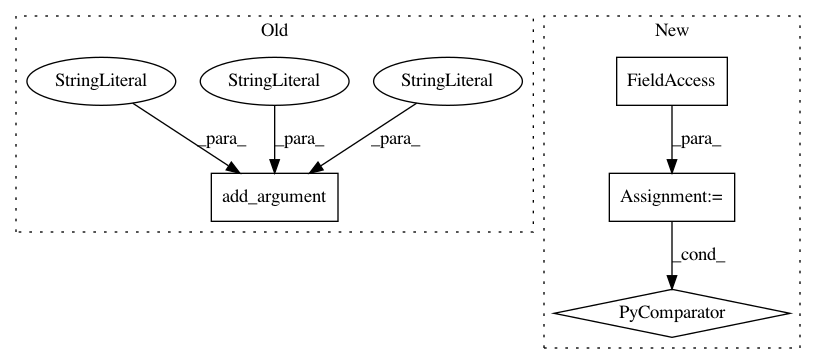

2c11eb164988b6beda5805d2c5034ac91982cc70,lib/cli.py,DirectoryProcessor,parse_arguments,#DirectoryProcessor#Any#Any#Any#,234
Before Change
raise NotImplementedError()
def parse_arguments(self, description, subparser, command):
self.parser.add_argument("-i", "--input-dir",
action=FullPaths,
dest="input_dir",
default="input",
help="Input directory. A directory containing the files \
you wish to process. Defaults to "input"")
self.parser.add_argument("-o", "--output-dir",
action=FullPaths,
dest="output_dir",
default="output",
After Change
raise NotImplementedError()
def parse_arguments(self, description, subparser, command):
for option in self.argument_list:
args = option["opts"]
kwargs = {key: option[key] for key in option.keys() if key != "opts"}
self.parser.add_argument(*args, **kwargs)
self.parser = self.add_optional_arguments(self.parser)
self.parser.set_defaults(func=self.process_arguments)
def create_parser(self, subparser, command, description):
In pattern: SUPERPATTERN
Frequency: 3
Non-data size: 4
Instances
Project Name: deepfakes/faceswap
Commit Name: 2c11eb164988b6beda5805d2c5034ac91982cc70
Time: 2018-04-04
Author: 36920800+torzdf@users.noreply.github.com
File Name: lib/cli.py
Class Name: DirectoryProcessor
Method Name: parse_arguments
Project Name: AllenCellModeling/pytorch_fnet
Commit Name: 14db8e4673cbbfd58ffb01e4374d5c87d7e5b6e3
Time: 2017-11-01
Author: chek.o@outlook.com
File Name: tools/colorize_tifs.py
Class Name:
Method Name:
Project Name: apache/incubator-mxnet
Commit Name: dfa3d07a74e59297394c624a3373a335f94a64eb
Time: 2019-12-26
Author: xinyu1.chen@intel.com
File Name: example/neural_collaborative_filtering/ncf.py
Class Name:
Method Name: